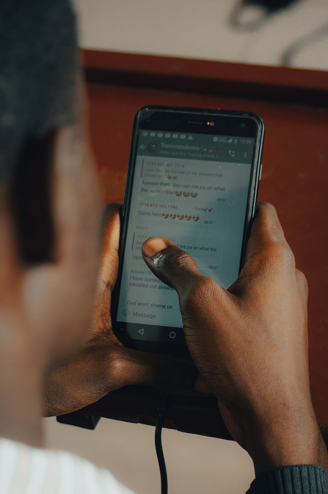

Pernah kebagian jadi admin grup kerja, lalu pengumuman penting tenggelam dalam lima menit karena obrolan lain? Atau anggota baru masuk grup komunitas lalu bertanya "ini bahas apa sih?" padahal jawabannya sudah dibahas kemarin? WhatsApp merilis empat fitur baru khusus obrolan grup pada 29 Oktober 2026 yang menjawab masalah seperti itu. Per November 2026 keempatnya mulai dibagikan bertahap ke Android dan iPhone. Berikut fungsi dan cara memakai tiap fiturnya.
1. Sematkan Pesan Penting Tanpa Batas Waktu
Sebelumnya, pin pesan di grup wajib pilih durasi: 24 jam, 7 hari, atau 30 hari, lalu lepas sendiri setelah waktunya habis. Sekarang ada opsi pin selamanya: pesan tetap nangkring di bagian atas sampai kamu melepasnya manual.
Cocok buat pengumuman permanen seperti jadwal rapat, alamat acara, atau aturan grup. Berikut cara menyematkannya:
- Buka WhatsApp lalu masuk ke grup yang kamu maksud.
- Cari pesan yang mau disematkan.
- Tekan dan tahan pesan tersebut sampai muncul menu.
- Pilih menu "Sematkan" atau Pin.
- Pilih durasi "Selamanya" (atau opsi tanpa batas waktu) kalau sudah tersedia di HP-mu.
- Konfirmasi penyematan kalau diminta.
Catatan kecil: pin ini menyematkan pesan di dalam ruang percakapan, bukan membuat chat orang itu selalu di urutan teratas daftar percakapan.

2. Kirim Riwayat Chat ke Anggota Baru Kapan Saja
Masalah klasik: anggota baru masuk tapi tidak tahu pembicaraan sebelumnya. Dulu, opsi berbagi riwayat cuma muncul sekali saat orang itu ditambahkan ke grup, dan hanya bisa dipakai admin. Sekarang riwayat bisa dibagikan kapan saja. Caranya:
- Buka grup WhatsApp yang punya anggota baru.
- Ketuk nama anggota yang mau kamu kirimkan riwayat percakapan, langsung dari dalam obrolan.
- Pilih opsi berbagi riwayat pesan kalau sudah tersedia.
- Ikuti petunjuk di layar untuk memilih dan mengirim pesan yang diizinkan sistem.
Yang penting dipahami: yang bisa dibagikan hanya pesan terbaru dari sebelum anggota itu bergabung, sesuai cakupan yang diizinkan WhatsApp, dan riwayat yang terkirim tetap dilindungi enkripsi end-to-end.
3. Buat Status Khusus yang Cuma Bisa Dilihat Anggota Grup
Group Status adalah status yang hanya tampil ke anggota grup tertentu yang kamu pilih, bukan ke seluruh kontak. Cocok buat foto kegiatan komunitas, dokumentasi acara keluarga, atau kabar singkat.
Anggota grup bisa melihat, memberi reaksi, dan menambahkan status mereka sendiri. Sama seperti status biasa, unggahannya hilang setelah 24 jam. Cara memakainya:
- Buka grup WhatsApp yang mau kamu tuju dengan status.
- Cari opsi Status Grup di tampilan grup, kalau fiturnya sudah ada di aplikasimu.
- Ketuk tombol untuk membuat atau menambahkan status.
- Pilih kontennya, bisa foto, video, atau format lain yang didukung.
- Periksa tujuan statusnya, lalu bagikan ke anggota grup.
Tampilan tombolnya bisa sedikit berbeda antara Android dan iPhone selama masa peluncuran fitur ini.
4. Saring Pesan yang Menyebut Namamu
Di grup yang ramai, pesan yang ditujukan buatmu bisa tenggelam. WhatsApp menambahkan filter "Mentions and Replies" (Sebutan dan Balasan): begitu dipilih, ia menampilkan grup belum dibaca yang berisi penyebutan akunmu atau balasan atas pesanmu, termasuk yang memakai @all.
- Buka WhatsApp dan masuk ke halaman daftar chat.
- Tampilkan pilihan filter percakapan kalau belum kelihatan.
- Pilih "Mentions and Replies" kalau sudah tersedia.
- Periksa grup yang muncul di daftar, lalu buka yang mau kamu tanggapi.
Perlu dicatat, filter ini hanya menampilkan grup belum dibaca yang punya mention atau balasan. Ia bukan arsip semua penyebutan yang pernah kamu terima.
Fitur Belum Muncul? Ini Cara Cek dan Memperbarui
WhatsApp membagikan keempat fitur ini secara bertahap dari sisi layanannya. Artinya, satu akun bisa sudah kebagian pin permanen sementara akun lain baru dapat filter mention, walau aplikasinya sama-sama versi terbaru. Jangan unduh aplikasi WhatsApp modifikasi atau file instalasi dari sumber tidak dikenal hanya demi dapat fitur lebih cepat. Yang aman dilakukan:
- Android: buka Google Play Store, cari WhatsApp Messenger, ketuk "Update" kalau tersedia, lalu tunggu prosesnya selesai.
- iPhone: buka App Store, cari WhatsApp Messenger, pilih "Update" kalau pembaruan tersedia, lalu tunggu sampai selesai.
- Buka WhatsApp dan cek langsung di percakapan grup.
- Kalau masih belum ada, berarti akunmu belum diaktifkan fiturnya. Tunggu saja gelombang berikutnya.
Kalau toko aplikasi hanya menampilkan tombol "Buka", berarti memang belum ada pembaruan untuk perangkatmu. Selama menunggu, pastikan ruang penyimpanan dan koneksi internet cukup untuk proses update.
Penutup
Itulah cara pakai fitur baru WhatsApp grup 2026. Keempatnya menjawab satu masalah yang sama: grup yang makin ramai bikin informasi penting gampang hilang. Pin permanen menjaga pengumuman tetap terlihat, berbagi riwayat membuat anggota baru cepat nyambung, status grup merapikan kabar yang sifatnya khusus, dan filter mention memastikan kamu tidak melewatkan pesan yang ditujukan padamu. Update aplikasi, cek berkala, dan manfaatkan yang sudah tersedia di akunmu.
Sumber dan Info Resmi
Fakta dan detail di artikel ini merujuk ke sumber berikut, yang sudah dicek silang isinya:
- Blog Bank Mega (blog.bankmega.com), terbit 2 November 2026: pengumuman resmi 29 Oktober 2026, empat fitur (pin permanen, berbagi riwayat chat, status grup 24 jam, filter mention dan balasan), langkah cara pakai tiap fitur, peluncuran bertahap Android dan iPhone, cara update aplikasi.
- Infotekno (infotekno.net), terbit 2 November 2026: durasi pin sebelumnya 24 jam, 7 hari, atau 30 hari; riwayat chat bisa dibagikan kapan saja dengan mengetuk nama anggota; enkripsi end-to-end tetap berlaku.
- Selular.ID (selular.id), terbit 1 November 2026: detail Group Status (anggota grup bisa melihat, memberi reaksi, menambahkan status sendiri, hilang setelah 24 jam); riwayat sebelumnya hanya bisa dibagikan admin saat anggota ditambahkan; filter mention termasuk @all.
- Stapo.id (stapo.id), terbit 2 November 2026: pengumuman di blog resmi WhatsApp 29 Oktober 2026 berisi empat pembaruan; pin pesan bukan membuat chat selalu di urutan teratas daftar percakapan; filter menampilkan grup belum dibaca yang berisi sebutan atau balasan, termasuk @all.
- Bulatan Times (bulatantimes.com): empat fitur mulai didistribusikan bertahap ke Android dan iPhone setelah pengumuman 29 Oktober 2026; tidak semua akun mendapat keempatnya sekaligus.
- Jurnal Lugas (jurnallugas.com), terbit 31 Oktober 2026: riwayat pesan dibagikan lewat tindakan pengguna, bukan seluruh percakapan otomatis terbuka.